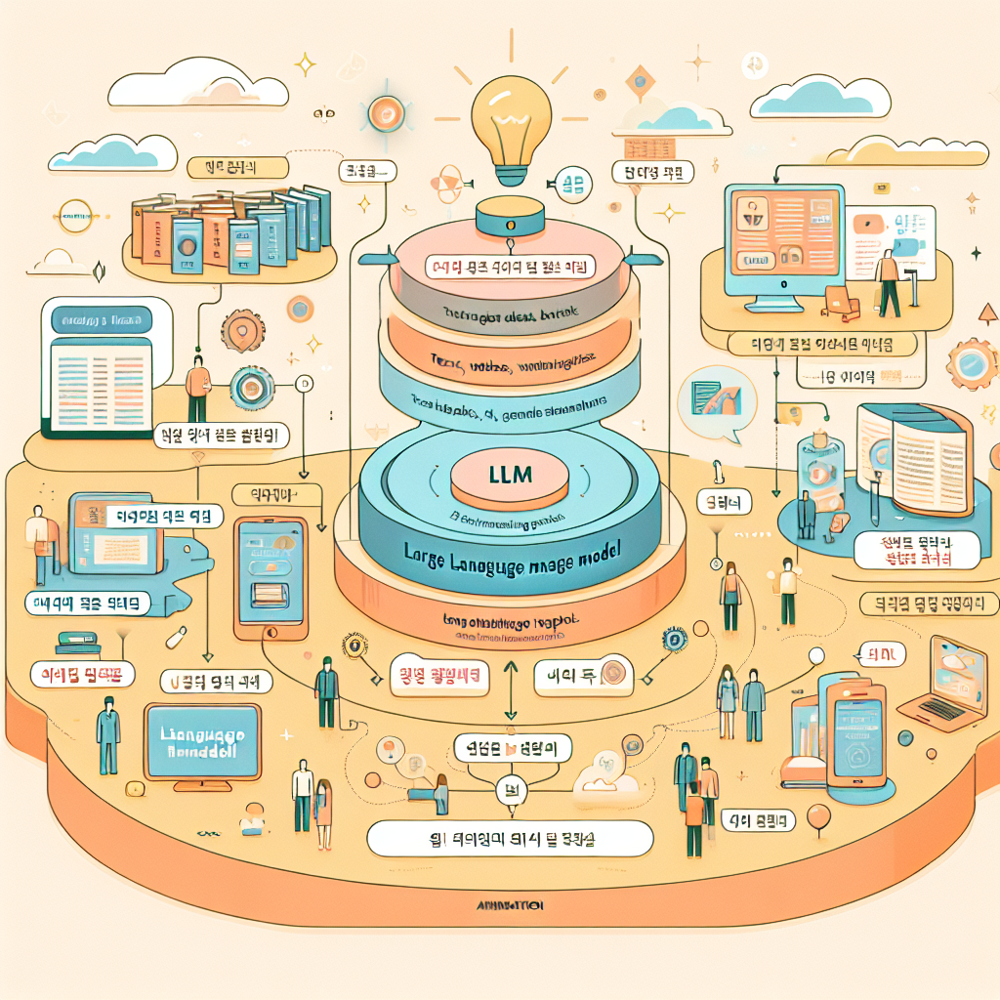
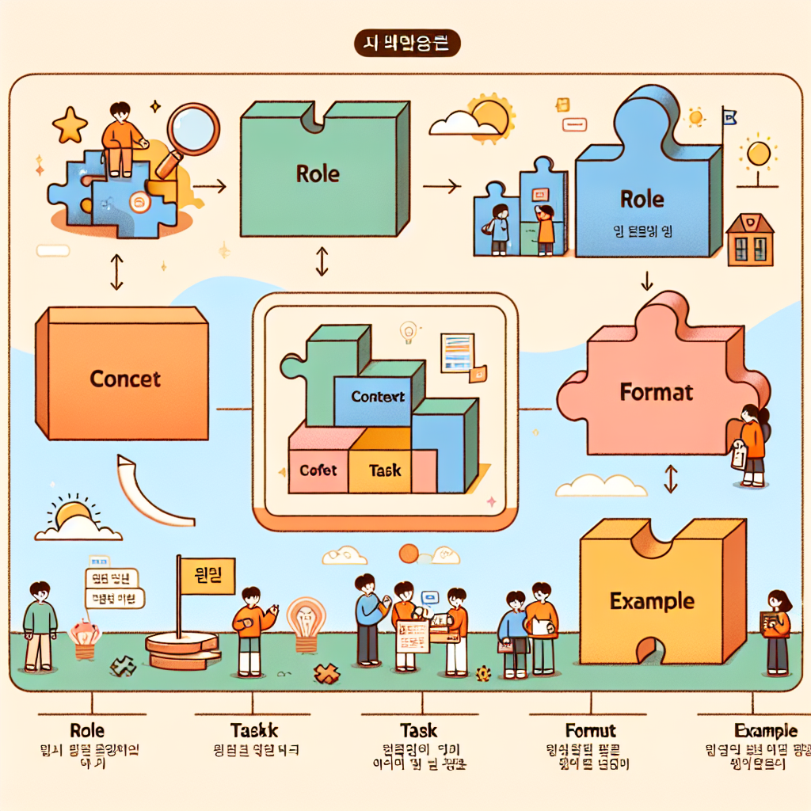

3장. 생성형 AI와 대규모 언어 모델¶
"AI에게 '좋은 질문'을 하는 능력이, 앞으로의 시대에서 가장 중요한 기술 중 하나가 될 것입니다."
🚀 도입: AI와 대화한다는 것¶
여러분은 ChatGPT나 Claude에게 질문을 해본 적이 있나요? 짧은 질문 하나에 놀랍도록 자연스러운 답변이 돌아오는 경험, 한 번쯤은 해봤을 것입니다. 그런데 혹시 이런 생각을 해보신 적 있나요?
"이 AI는 도대체 어떻게 내 말을 이해하고 대답하는 걸까?"
이 챕터에서는 그 궁금증에 답을 드립니다. ChatGPT, Claude와 같은 생성형 AI의 작동 원리를 이해하고, 나아가 AI를 훨씬 더 효과적으로 활용하는 방법인 프롬프트 엔지니어링을 배워봅시다.
📌 학습 목표
이 챕터를 마치면 여러분은 다음을 할 수 있습니다.
- 생성형 AI와 대규모 언어 모델(LLM) 의 기본 작동 원리를 설명할 수 있다.
- 프롬프트 엔지니어링의 개념과 핵심 원칙을 이해하고 적용할 수 있다.
- 목적에 맞는 효과적인 프롬프트를 직접 설계하고 작성할 수 있다.
- 생성형 AI 활용 시 발생할 수 있는 윤리적 문제와 한계를 인식할 수 있다.
1. 생성형 AI란 무엇인가?¶
1.1 생성형 AI의 등장¶
인공지능의 역사는 오래되었지만, 우리가 오늘날 경험하는 것처럼 자연스럽게 글을 쓰고, 이미지를 만들고, 코드를 짜주는 AI는 비교적 최근에 등장했습니다. 이를 생성형 AI(Generative AI) 라고 부릅니다.
생성형 AI는 기존의 AI와 무엇이 다를까요? 아래 표를 통해 비교해봅시다.
| 구분 | 기존 AI (분류/예측) | 생성형 AI |
|---|---|---|
| 주요 기능 | 입력을 분류하거나 값을 예측 | 새로운 콘텐츠를 직접 생성 |
| 출력 예시 | "이 이메일은 스팸입니다" | "이 주제로 이메일을 작성해드릴게요" |
| 대표 사례 | 스팸 필터, 주가 예측 | ChatGPT, Claude, DALL-E, Midjourney |
생성형 AI는 텍스트, 이미지, 음악, 코드 등 다양한 형태의 콘텐츠를 새롭게 만들어내는 AI입니다.
1.2 대표적인 생성형 AI 서비스¶
오늘날 우리가 접할 수 있는 대표적인 생성형 AI 서비스들을 소개합니다.
| 서비스명 | 개발사 | 주요 특징 |
|---|---|---|
| ChatGPT | OpenAI | 가장 널리 알려진 대화형 AI, GPT 시리즈 기반 |
| Claude | Anthropic | 안전성과 유용성을 강조, 긴 문서 처리에 강점 |
| Gemini | Google DeepMind | 구글 서비스와의 통합, 멀티모달 지원 |
| HyperCLOVA X | NAVER | 한국어 특화 대형 언어 모델 |
| DALL-E / Midjourney | OpenAI / 독립 | 텍스트 기반 이미지 생성 |
2. 대규모 언어 모델(LLM)의 원리¶
2.1 LLM이란?¶
생성형 AI 중 텍스트를 다루는 모델들은 대부분 대규모 언어 모델(Large Language Model, LLM) 을 기반으로 합니다. 이름에서 알 수 있듯이, 굉장히 '크고' '언어'를 다루는 '모델'입니다.
- 대규모(Large): 수천억 개의 매개변수(parameter)로 구성
- 언어(Language): 인간의 언어(텍스트)를 입력과 출력으로 사용
- 모델(Model): 수학적 패턴으로 언어를 학습한 AI

2.2 LLM은 어떻게 학습하는가?¶
LLM의 학습 과정을 간단히 이해해봅시다. 핵심 원리는 "다음에 올 단어를 예측하는 것" 입니다.
예시로 이해하기
LLM은 인터넷의 글, 책, 뉴스 등 엄청난 양의 텍스트 데이터를 학습하면서, 어떤 단어 다음에 어떤 단어가 오는지의 패턴을 익힙니다. 이 과정을 통해 문법, 사실, 추론 능력까지 자연스럽게 습득하게 됩니다.
LLM 학습의 3단계
1단계: 사전 학습 (Pre-training)
└─ 방대한 텍스트 데이터로 언어 패턴 학습
2단계: 지도 미세조정 (Supervised Fine-tuning)
└─ 사람이 작성한 고품질 예시로 추가 학습
3단계: 강화학습 기반 인간 피드백 (RLHF)
└─ 사람의 평가를 반영해 더 좋은 답변 생성하도록 최적화
2.3 트랜스포머(Transformer) 구조¶
현대 LLM의 핵심에는 트랜스포머(Transformer) 라는 신경망 구조가 있습니다. 2017년 구글이 발표한 이 구조는 AI 분야의 혁명을 가져왔습니다.
트랜스포머의 핵심 아이디어는 "어텐션(Attention)" 입니다. 문장에서 각 단어가 다른 단어들과 얼마나 관련 있는지를 계산하여, 문맥을 훨씬 잘 이해할 수 있게 해줍니다.
어텐션 메커니즘 예시:
문장: "철수가 공을 찼는데 그것이 멀리 날아갔다"
AI는 '그것'이라는 단어를 이해할 때,
→ '공'과의 연관성: 매우 높음 (●●●●●)
→ '철수'와의 연관성: 낮음 (●○○○○)
→ '찼는데'와의 연관성: 중간 (●●●○○)
이처럼 문맥 전체를 동시에 고려하기 때문에 자연스러운 언어 이해가 가능한 것입니다.
💡 심화 이해: GPT는 무엇의 약자일까요?
Generative Pre-trained Transformer의 약자입니다. - Generative: 텍스트를 생성하는 - Pre-trained: 대규모 데이터로 사전 학습된 - Transformer: 트랜스포머 구조 기반의
이름 자체가 LLM의 핵심 원리를 담고 있습니다!
3. 프롬프트 엔지니어링¶
3.1 프롬프트란?¶
프롬프트(Prompt) 는 AI에게 전달하는 입력 텍스트입니다. 쉽게 말해, AI에게 하는 "질문" 또는 "지시문"이라고 할 수 있습니다.
그런데 같은 목적이라도 프롬프트를 어떻게 작성하느냐에 따라 결과가 크게 달라집니다.
비교 예시:
❌ 나쁜 프롬프트:
"에세이 써줘"
✅ 좋은 프롬프트:
"고등학생을 대상으로 기후 변화의 원인과 해결책에 관한
설득력 있는 에세이를 800자 내외로 작성해줘.
서론, 본론(2가지 주장), 결론 구조로 써줘."
프롬프트 엔지니어링(Prompt Engineering) 이란 원하는 결과를 얻기 위해 AI에게 보내는 프롬프트를 체계적으로 설계하고 최적화하는 기술입니다.
3.2 효과적인 프롬프트의 5가지 핵심 요소¶
좋은 프롬프트에는 공통적인 요소들이 있습니다. 기억하기 쉽게 "RCTFE 프레임워크" 로 정리해봤습니다.

| 요소 | 영문 | 설명 | 예시 |
|---|---|---|---|
| 역할 | Role | AI에게 역할 부여 | "너는 전문 과학 교사야" |
| 맥락 | Context | 배경 정보 제공 | "고등학교 2학년 학생을 위한" |
| 작업 | Task | 구체적인 지시 | "양자역학 개념을 설명해줘" |
| 형식 | Format | 출력 형태 지정 | "번호 목록으로, 500자 이내로" |
| 예시 | Example | 원하는 스타일 예시 | "예를 들어, 이런 형태로: ..." |
3.3 프롬프트 유형별 기법¶
① 제로샷 프롬프팅 (Zero-shot Prompting)¶
예시 없이 바로 지시하는 방식입니다.
② 퓨샷 프롬프팅 (Few-shot Prompting)¶
몇 가지 예시를 함께 제공하는 방식입니다. 복잡한 패턴이 필요할 때 효과적입니다.
프롬프트:
"다음 예시를 참고해서 감정을 분류해줘:
예시 1: '오늘 친구를 만나서 즐거웠다' → 긍정
예시 2: '버스를 놓쳤다' → 부정
예시 3: '내일 날씨가 흐리다고 한다' → 중립
분류할 문장: '오늘 시험을 완전히 망쳤어'"
AI 응답:
부정
③ 체인 오브 소트 (Chain-of-Thought, CoT)¶
AI가 단계적으로 생각하도록 유도하는 방식입니다. 복잡한 추론 문제에 효과적입니다.
``` 프롬프트: "다음 수학 문제를 단계별로 풀어줘: 철수는 사탕을 24개 가지고 있었다. 친구 3명에게 똑같이 나눠주고, 남은 것의 절반을 동생에게 줬다면, 철수에게 남은 사탕은 몇 개인가?"
AI 응답: 1단계: 친구 3명에게 나눠준 사탕 수 24 ÷ 3 = 8개씩 → 나눠준 총 사탕: 8 × 3 = 24개
잠깐, 24개를 모두 나눠주면 0개가 남는데...